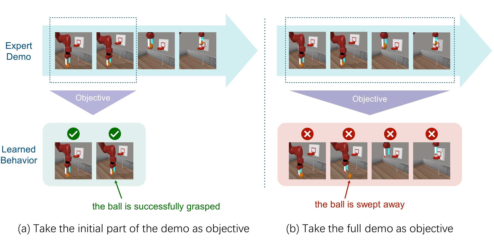
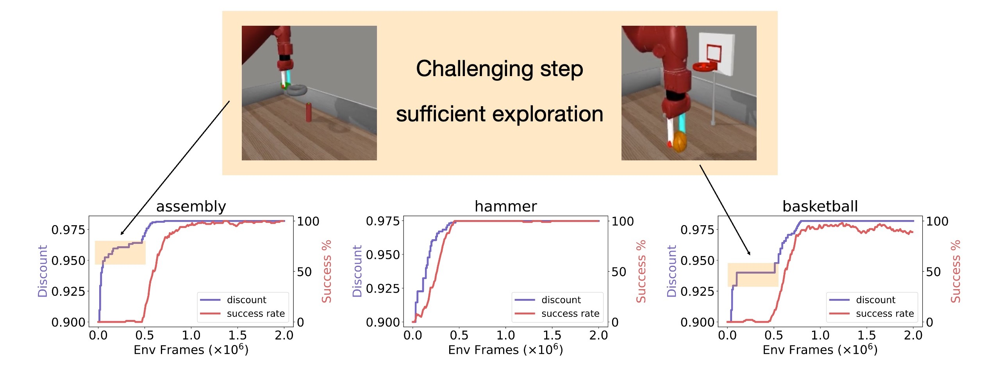
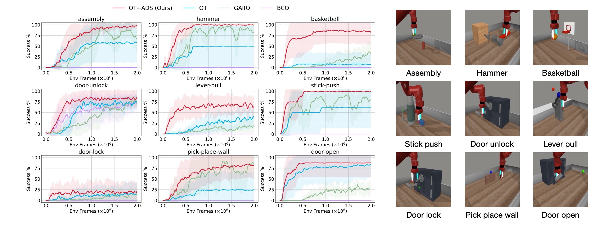

This paper focuses on the problem known as Imitation Learning from Observation (ILfO), where robots learn by imitating the expert's demonstration video without access to the expert's action. Common approaches convert ILfO problems into inverse reinforcement learning problems, using a proxy reward computed from the agent's and the expert's observations. However, we observe that the tasks with progress dependency property pose significant challenges for such approach; in these tasks, the agent needs to initially learn the expert's preceding behaviors before mastering the subsequent ones. We reveal the underlying mechanism of this phenomenon and present a novel Automatic Discount Scheduling (ADS) method to address the issue.
Consider the following basketball task. If we experiment with a simplified setting that only instructs the agent to learn the expert's early behaviors (reaching for and grasping the ball), the agent quickly acquires these skills. However, when tasked with learning the entire expert demonstration, the same method fails to acquire the initial grasping skill, and instead, moves the empty gripper directly to the basket. This is an intriguing finding: rewarding later steps in a trajectory seems to negatively impact the agent’s ability to learn the earlier behaviors.
We observe a similar phenomenon in many manipulation tasks characterized by progress dependencies. In these tasks, the agents trained by previous proxy-reward-based approaches often fail to mimic the expert's early behaviors. Instead, they resort to optimizing rewards in later stages by moving to states that appear similar to demonstrated states. These locally optimal but incorrect solutions can hinder the agent's exploration of earlier critical behaviors. (See Section 3 in our paper.)
To address the above issue, we propose to restrict the impact of later rewards until the agent has mastered the previous behavior. Our method continuously monitors the agent’s learning progress and dynamically assigns a discount factor that positively correlates with the progress.
Comparison against start-of-the-art ILfO baselines on 9 challenging Meta-World tasks, with 8 random seeds:
@article{liu2023imitation,
title={Imitation Learning from Observation with Automatic Discount Scheduling},
author={Liu, Yuyang and Dong, Weijun and Hu, Yingdong and Wen, Chuan and Yin, Zhao-Heng and Zhang, Chongjie and Gao, Yang},
journal={arXiv preprint arXiv:2310.07433},
year={2023}
}